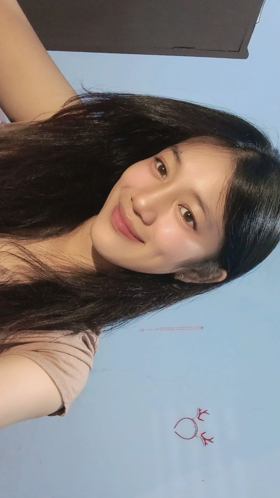

Meskipun dunia seperti ingin menjauhkan kita, kita masih di sini... berjuang untuk satu sama lain.
Aku tahu akhir-akhir ini semuanya terasa berat...
Tapi kamu harus tahu, kamu bukan sendirian...
Aku di sini, tetap memilih kita...
Ocill, senyummu masih alasanku bertahan sejauh ini...
Aku sayang kamu, bukan karena mudah, tapi karena kamu pantas untuk diperjuangkan...
Kalau kamu lelah, sini Hug dulu 🤗
Apapun yang terjadi nanti, cinta ini tetap nyata.
Kita masih di sini, dan semoga tetap di sana, bersama.
I LOVE YOU 3000 TIMES 💌
Dan senyum itu... yang di foto itu... masih jadi hal terindah yang bisa nenangin aku di saat aku jatuh. Jangan hilang ya, senyum itu. Aku butuh itu, selalu. 🥺❤️
Peluk & Senyum Kamu 💗

Senyum kamu ini, yang selalu buat aku kuat meski dunia lagi runtuh 💖